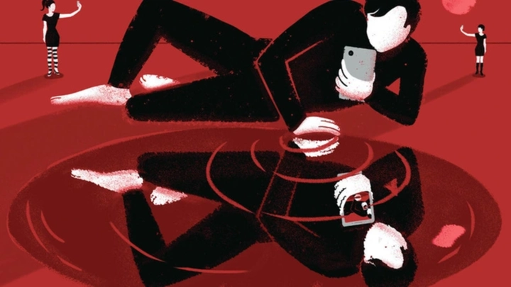
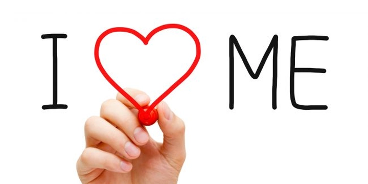
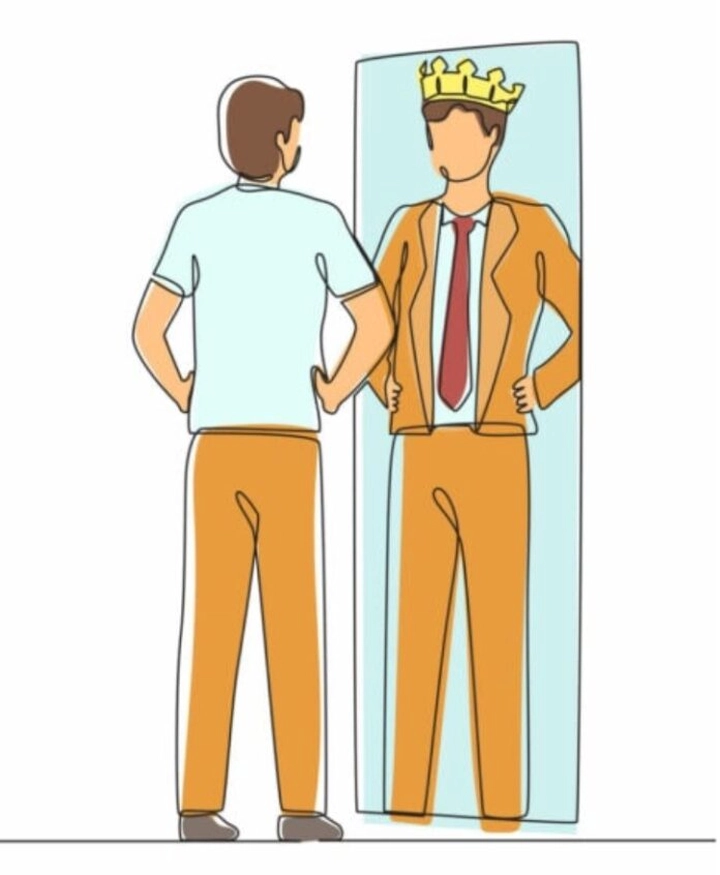

Những người ái kỷ trong xã hội hiện đại
Trong xã hội hiện đại, chúng ta thường gặp những người có tính cách tự tin, quyết đoán, nhưng cũng có những cá nhân mang đặc điểm ái kỷ – luôn đặt bản thân lên trên hết, thiếu đồng cảm và thường thao túng người khác để đạt mục đích. Việc nhận diện và hiểu rõ tính cách ái kỷ không chỉ giúp bảo vệ bản thân mà còn góp phần xây dựng môi trường sống và làm việc lành mạnh hơn. Bài viết này sẽ phân tích 10 khía cạnh quan trọng giúp bạn hiểu rõ về tính cách ái kỷ trong xã hội.
1. Định nghĩa "ái kỷ"
Ái kỷ dịch nghĩa "word by word" có nghĩa là yêu bản thân một cách thái quá, trong trường hợp mô tả tính cách con người thì ái kỷ là người có xu hướng tập trung quá mức vào bản thân, đặt giá trị của chính mình lên trên người khác và luôn mong muốn được chú ý, ngưỡng mộ hoặc công nhận. Họ thường tin rằng bản thân xứng đáng được đối xử đặc biệt và quyền lợi của mình phải được ưu tiên. Không giống với sự tự tin lành mạnh, người ái kỷ thể hiện một mức độ cực đoan trong cách nhìn nhận bản thân và mối quan hệ với người khác.
Một trong những điểm đặc trưng của người ái kỷ là thiếu khả năng đồng cảm: họ khó hoặc thậm chí không thể nhận biết và quan tâm đến cảm xúc, nhu cầu của người khác. Điều này dẫn đến việc họ thường hành động mà không cân nhắc hậu quả đối với người xung quanh. Người ái kỷ cũng có xu hướng coi thường hoặc hạ thấp người khác, đặc biệt là những ai họ cho là “thấp kém” hoặc cản trở mục tiêu của mình.

Ngoài ra, họ thường tìm mọi cách để khẳng định bản thân, từ việc khoe thành tích, tìm kiếm lời khen, cho đến thao túng tình huống hoặc người khác để bản thân nổi bật. Hành vi này có thể xuất hiện trong nhiều bối cảnh khác nhau: gia đình, bạn bè, môi trường học tập, hay công sở. Khi quan sát kỹ, người ái kỷ thường có vẻ ngoài tự tin, hấp dẫn, nhưng đằng sau đó là nhu cầu liên tục được thừa nhận và lo sợ bị từ chối hoặc xem nhẹ.
Ái kỷ không chỉ là tính cách cá nhân mà còn là một dạng rối loạn nhân cách trong các trường hợp cực đoan, gây ảnh hưởng sâu sắc đến mối quan hệ xã hội và tinh thần của những người xung quanh. Hiểu rõ định nghĩa này giúp chúng ta nhận diện kẻ ái kỷ sớm, từ đó có cách ứng xử phù hợp để bảo vệ bản thân và hạn chế tác động tiêu cực trong giao tiếp hàng ngày.
2. Các đặc điểm nhận biết tính cách ái kỷ
Người mang tính cách ái kỷ thường có những dấu hiệu dễ nhận biết, mặc dù không phải lúc nào cũng hiển hiện rõ ràng. Một trong những đặc điểm nổi bật là tự cao và đề cao bản thân một cách thái quá, họ thường tin rằng ý kiến, quyết định và nhu cầu của mình quan trọng hơn người khác. Họ thích làm trung tâm trong mọi tình huống, từ cuộc trò chuyện đến các sự kiện xã hội, luôn muốn mọi người chú ý và ngưỡng mộ.
Người ái kỷ cũng thường luôn muốn chứng minh giá trị bản thân: họ tìm cách khoe thành tích, so sánh với người khác, hoặc nhấn mạnh ưu thế cá nhân để tạo cảm giác vượt trội. Trong các mối quan hệ, họ ít quan tâm đến cảm xúc và nhu cầu của người khác, và thường thiếu đồng cảm. Một đặc điểm nữa là xu hướng thao túng môi trường xung quanh để phục vụ lợi ích cá nhân, thông qua lời nói, hành vi hoặc các quyết định tinh vi nhằm kiểm soát người khác.
Những đặc điểm này đôi khi được che giấu bởi vẻ bề ngoài tự tin, hấp dẫn, hoặc khả năng giao tiếp khéo léo, khiến người khác khó nhận ra ngay lập tức. Việc nhận diện sớm các dấu hiệu của tính cách ái kỷ sẽ giúp chúng ta có cách ứng xử phù hợp và bảo vệ bản thân trong giao tiếp xã hội.
3. Nguyên nhân hình thành tính cách ái kỷ
Tính cách ái kỷ không phải tự nhiên xuất hiện mà thường hình thành từ nhiều yếu tố kết hợp:
-
Gia đình: Cha mẹ có thể vô tình nuôi dưỡng tính cách ái kỷ ở trẻ bằng cách quá kiểm soát, ép buộc hoặc ngược lại nuông chiều thái quá, khiến trẻ không học được cách chia sẻ, thấu hiểu cảm xúc người khác và phát triển lòng tự trọng lành mạnh.
-
Môi trường xã hội: Sống trong môi trường cạnh tranh khốc liệt, đề cao thành tích cá nhân, so sánh liên tục với người khác, trẻ dễ hình thành tư duy “mình phải luôn nổi bật, mình phải hơn người khác” – điều này góp phần củng cố tính cách ái kỷ.
-
Trải nghiệm tuổi thơ: Thiếu tình thương, sự thấu hiểu hoặc trải qua các tổn thương tâm lý trong giai đoạn phát triển sẽ làm gia tăng khả năng phát triển tính cách ái kỷ. Trẻ có thể học được cách tự bảo vệ bản thân bằng việc đặt nhu cầu của mình lên trên hết, từ đó hình thành thói quen thiếu đồng cảm với người khác.

Như vậy, tính cách ái kỷ là kết quả của sự kết hợp giữa yếu tố cá nhân, gia đình và xã hội, không phải là một đặc điểm bẩm sinh duy nhất. Hiểu rõ nguồn gốc này sẽ giúp chúng ta nhìn nhận hiện tượng này một cách khách quan, không chỉ là “tội lỗi cá nhân” mà còn là vấn đề tâm lý – xã hội cần được nhận biết và xử lý.
4. Hành vi ái kỷ trong giao tiếp xã hội
Người mang tính cách ái kỷ thể hiện nhiều hành vi rõ rệt trong giao tiếp xã hội. Họ thường thao túng người khác bằng lời nói hoặc hành động, nhằm đạt được mục đích cá nhân, đồng thời củng cố hình ảnh vượt trội của bản thân. Một số hành vi phổ biến bao gồm:
-
Hạ thấp người khác để nâng mình lên, bằng những lời nhận xét mỉa mai, chế giễu, hoặc so sánh tinh vi.
-
Tìm kiếm sự chú ý liên tục, từ việc nói chuyện, khoe thành tích cá nhân, đến việc đưa ra ý kiến trong mọi tình huống dù không cần thiết.
-
Sử dụng lời khen giả tạo hoặc chỉ trích tinh vi, nhằm thao túng cảm xúc người khác và tạo cảm giác phụ thuộc hoặc tội lỗi.
-
Điều khiển môi trường xã hội: họ có thể xoay chuyển mối quan hệ, gây xích mích, hoặc tạo tình huống để mọi người phải công nhận hoặc phục vụ mình.
Hành vi này thường khiến người xung quanh cảm thấy mệt mỏi, căng thẳng, hoặc mất tự tin. Đồng thời, chúng cũng có thể ảnh hưởng đến tinh thần tập thể trong gia đình, bạn bè, hoặc môi trường công sở. Nhận diện hành vi ái kỷ trong giao tiếp sẽ giúp chúng ta đặt ra ranh giới, bảo vệ bản thân và hạn chế tác động tiêu cực từ những người này.
5. Ảnh hưởng của người ái kỷ đến môi trường xung quanh
Người mang tính cách ái kỷ không chỉ tác động đến bản thân mà còn ảnh hưởng sâu sắc đến môi trường xung quanh, từ gia đình, bạn bè đến đồng nghiệp. Sự xuất hiện của họ thường tạo ra căng thẳng liên tục, vì họ đặt nhu cầu và mong muốn của mình lên trên hết, không quan tâm đến cảm xúc của người khác. Những người xung quanh thường cảm thấy mệt mỏi, áp lực, hoặc bị thao túng tinh thần, vì phải liên tục điều chỉnh hành vi để tránh xung đột hoặc để vừa lòng người ái kỷ.
Trong các mối quan hệ thân thiết như gia đình, sự hiện diện của người ái kỷ có thể dẫn đến mâu thuẫn kéo dài, khi các quyết định và nhu cầu cá nhân luôn chiếm ưu thế. Cha mẹ, con cái, hay vợ chồng đều có thể cảm thấy bị coi thường hoặc mất quyền tự quyết, dẫn đến suy giảm tự tin và cảm giác bất an. Trong nhóm bạn bè, người ái kỷ thường thao túng tình huống để nổi bật, khiến các thành viên khác cảm thấy bị đè nén, lấn át hoặc bị loại khỏi các quyết định tập thể.
Tác động tiêu cực cũng lan sang môi trường xã hội rộng hơn. Trong bất kỳ nhóm hay tổ chức nào, sự xuất hiện của tính cách ái kỷ nếu không được quản lý sẽ tạo ra một bầu không khí thiếu tin tưởng, căng thẳng và cạnh tranh không lành mạnh, ảnh hưởng đến sự gắn kết, tinh thần làm việc nhóm, và cả hiệu quả chung. Việc nhận diện và xử lý kịp thời những hành vi ái kỷ là rất quan trọng để bảo vệ sức khỏe tinh thần của mọi người và duy trì môi trường lành mạnh.
6. Người ái kỷ trong môi trường công sở
Trong môi trường công sở, người ái kỷ thường gây ra những tác động sâu sắc và phức tạp. Họ có thể xuất hiện dưới vai trò đồng nghiệp hay lãnh đạo, và hành vi của họ thường hướng tới việc kiểm soát, thao túng hoặc chiếm đoạt quyền lợi. Đồng nghiệp với tính cách ái kỷ thường đổ lỗi cho người khác khi xảy ra sai sót, đồng thời tìm cách thâu tóm công lao của người khác để bản thân được đánh giá cao hơn.
Lãnh đạo mang tính cách ái kỷ thường gây ra môi trường làm việc độc hại, nơi nhân viên cảm thấy bị giám sát quá mức, không được tôn trọng, hoặc phải làm việc trong áp lực căng thẳng kéo dài. Họ có thể thao túng thông tin, gây chia rẽ giữa các thành viên, hoặc sử dụng các chiến thuật tâm lý tinh vi để duy trì quyền lực và kiểm soát nhóm.
Hậu quả là năng suất và tinh thần làm việc của cả nhóm bị giảm sút. Nhân viên dễ mất động lực, giảm sự sáng tạo, và cảm thấy không an toàn về vị trí công việc của mình. Môi trường công sở với người ái kỷ không được xử lý sẽ trở nên căng thẳng, thiếu hợp tác, và khó đạt được mục tiêu chung. Do đó, việc nhận diện tính cách ái kỷ và áp dụng các biện pháp quản lý, như thiết lập ranh giới rõ ràng, truyền thông minh bạch, và hỗ trợ nhân viên bảo vệ quyền lợi cá nhân, là vô cùng quan trọng để duy trì môi trường làm việc lành mạnh.
7. Cách tự bảo vệ bản thân khi tiếp xúc với người ái kỷ
Tiếp xúc với người mang tính cách ái kỷ đôi khi có thể gây căng thẳng, mệt mỏi và ảnh hưởng đến sức khỏe tinh thần. Do đó, việc tự bảo vệ bản thân là rất quan trọng. Trước tiên, bạn cần nhận diện các dấu hiệu cảnh báo, như thái độ tự cao, thường xuyên hạ thấp người khác, thao túng tình huống hay thiếu đồng cảm. Việc nhận diện sớm giúp bạn chuẩn bị tâm lý và hành vi phù hợp.
Tiếp theo, hãy thiết lập ranh giới rõ ràng. Điều này có nghĩa là bạn biết được đâu là mức chịu đựng và những điều không chấp nhận được, từ đó không để người ái kỷ lấn át hay thao túng bạn. Đồng thời, hạn chế chia sẻ quá nhiều thông tin cá nhân để tránh bị lợi dụng, đặc biệt trong môi trường công sở hoặc các mối quan hệ xã hội phức tạp.
Cuối cùng, luôn giữ bình tĩnh và tránh bị cuốn vào trò thao túng của họ. Người ái kỷ thường sử dụng cảm xúc để điều khiển người khác, nên việc không phản ứng nóng nảy hay quá xúc động sẽ giúp bạn duy trì quyền kiểm soát tình huống. Kết hợp các chiến lược này sẽ giúp bảo vệ tinh thần, duy trì sự tự tin và giảm tối đa tác động tiêu cực từ người ái kỷ.
8. Hiểu lầm phổ biến về người ái kỷ
Một trong những hiểu lầm phổ biến nhất trong xã hội là nhầm lẫn giữa sự tự tin và tính cách ái kỷ. Nhiều người cho rằng một cá nhân tự tin, quyết đoán hay thể hiện bản thân rõ ràng là “tự cao” hoặc ái kỷ, nhưng thực tế, sự tự tin lành mạnh bao gồm khả năng lắng nghe, quan tâm và tôn trọng người khác, trong khi người ái kỷ thường chỉ tập trung vào lợi ích và nhu cầu của bản thân, bất chấp cảm xúc, quyền lợi hoặc quyền tự quyết của người khác.
Hiểu rõ sự khác biệt này giúp chúng ta không vội vàng đánh giá sai, tránh gán nhãn tiêu cực cho những người hoàn toàn bình thường. Nhiều người ái kỷ không biểu hiện ra bên ngoài sự gay gắt hay hống hách. Trái lại, họ có thể xuất hiện với vẻ ngoài hấp dẫn, khéo giao tiếp và thân thiện, làm cho người xung quanh khó nhận ra hành vi thao túng tinh vi.
Ví dụ, một đồng nghiệp có thể liên tục khen bạn một cách quá mức để tạo cảm giác nợ nần hay phụ thuộc, sau đó yêu cầu bạn làm việc theo ý họ. Đây là một dạng thao túng điển hình mà người ngoài khó phát hiện nếu chỉ nhìn bề ngoài. Nhận thức đúng về các dấu hiệu này giúp chúng ta ứng xử thông minh, giảm thiểu rủi ro và duy trì mối quan hệ lành mạnh, đồng thời tránh bị cuốn vào vòng xoáy tâm lý mà người ái kỷ tạo ra.
9. Người ái kỷ trên mạng xã hội
Trong thời đại số, tính cách ái kỷ không chỉ thể hiện trong đời thực mà còn lan rộng trên mạng xã hội, nơi họ có thể phô trương thành tích, tài sản, ngoại hình hoặc lối sống cá nhân nhằm tạo sự chú ý và ngưỡng mộ từ cộng đồng. Một số người ái kỷ còn gây hấn, bình luận khiêu khích hoặc thao túng cảm xúc người khác, nhằm chiếm ưu thế trong các cuộc tranh luận trực tuyến hoặc khiến người theo dõi phụ thuộc vào cảm xúc của họ.

Ví dụ, một người ái kỷ có thể liên tục đăng những bài viết thành tích, kèm theo những lời bình luận mỉa mai hoặc khiêu khích, tạo ra áp lực ngầm đối với người xem, khiến họ cảm thấy phải đáp lại hoặc so sánh. Hành vi này không chỉ ảnh hưởng đến tâm lý cá nhân mà còn tác động đến cộng đồng trực tuyến, làm tăng xung đột, căng thẳng và tranh cãi.
Hiểu rõ hành vi của người ái kỷ trên mạng xã hội giúp người dùng cảnh giác, bảo vệ tinh thần và giữ sự cân bằng tâm lý. Một số chiến lược hữu ích bao gồm: giữ khoảng cách với các tương tác tiêu cực, hạn chế chia sẻ thông tin cá nhân, không phản ứng nóng nảy và duy trì ý thức tự trọng. Nhờ đó, chúng ta có thể tận dụng mạng xã hội mà không bị cuốn vào các xung đột hoặc áp lực do tính cách ái kỷ gây ra.
10. Hướng đi cho xã hội khi đối diện với tính cách ái kỷ
Đối diện với tính cách ái kỷ không chỉ là trách nhiệm của từng cá nhân mà còn là vấn đề xã hội cần quan tâm. Để giảm thiểu tác động tiêu cực, xã hội cần nâng cao nhận thức về ái kỷ, giáo dục kỹ năng quản lý cảm xúc và đồng cảm từ sớm, giúp trẻ em và người trưởng thành hiểu cách cư xử lành mạnh và xây dựng các mối quan hệ bền vững.
Việc tạo ra môi trường xã hội và công sở lành mạnh, nơi mọi người được tôn trọng, khuyến khích hợp tác và chia sẻ, sẽ hạn chế cơ hội để hành vi ái kỷ bộc lộ hoặc thao túng người khác. Ngoài ra, phổ biến kiến thức về nhận diện tính cách ái kỷ và chiến lược ứng xử thông minh sẽ giúp cộng đồng tự bảo vệ bản thân, giảm xung đột và duy trì sự gắn kết.
Khi mỗi cá nhân học cách thiết lập ranh giới, giữ bình tĩnh và đồng cảm với người khác, đồng thời nhận diện và hạn chế các hành vi ái kỷ, xã hội sẽ dần hình thành một cộng đồng bền vững, hài hòa, và ít bị chi phối bởi những hành vi thao túng hay ích kỷ. Đây không chỉ là hướng đi cần thiết cho các tổ chức, mà còn là bài học quan trọng trong việc xây dựng môi trường sống và làm việc lành mạnh, góp phần nâng cao chất lượng cuộc sống chung.